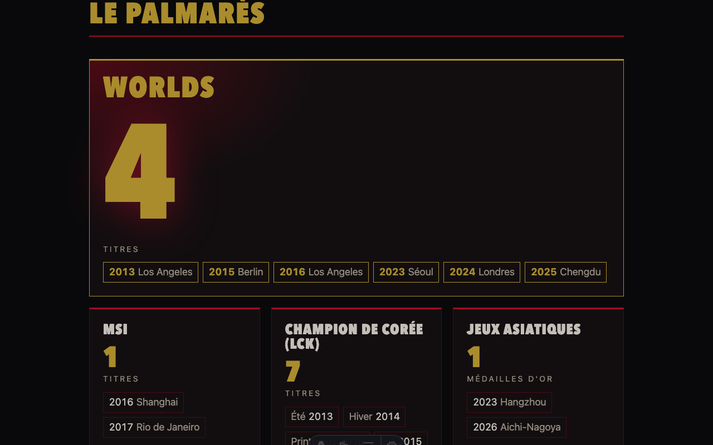

Les animations
La page s'affichait d'un bloc, sans mouvement, alors que la spec voulait une découverte vivante. Les Sections apparaissent maintenant en fondu, et les chiffres du Palmarès comptent jusqu'à leur total.
Décision attendue
Merger la pull request. Point mineur ouvert : pendant la seconde où un chiffre compte, un lecteur d'écran peut lire un chiffre intermédiaire.
Risque
Faible
Avant / après
Palmarès, un quart de seconde après l'arrivée


Palmarès avec « réduire les animations »
Ce qui change
- Chaque Section apparaît en fondu quand on l'atteint en faisant défiler la page
- Chaque chiffre du Palmarès compte de 0 à son total en une seconde, quand il arrive à l'écran
- Avec « réduire les animations » activé sur l'appareil, tout s'affiche directement, sans mouvement
- Sans JavaScript, ou à l'impression, tout le contenu reste visible
Fiabilité
Tests94 tests passent, dont 7 nouveaux sur les animations
ChecksPassés sur cette version (1ebb343)
Critères6 sur 6 prouvés (voir l'annexe)
Tests existantsAucun supprimé ni modifié
RelectureDeux relectures indépendantes. Trois défauts corrigés (compteur trop tôt, clignotement, impression vide). 3 remarques mineures restent.
RisqueAjout isolé : un petit script et deux règles de style. Rien d'existant ne change. Retirer le script suffit à tout annuler.
Choix effectués
Le HTML envoyé au visiteur montre toujours tout : les vrais chiffres, toutes les Sections. C'est le petit script du navigateur qui cache puis révèle, et seulement s'il tourne et que l'appareil accepte les animations. L'autre option, cacher par défaut et laisser le script révéler, aurait laissé une page vide si le script échouait. La contrepartie : une Section déjà visible au chargement, comme l'En-tête, ne fait pas de fondu. Cela évite qu'elle disparaisse puis revienne. Aucune bibliothèque n'a été ajoutée : une cinquantaine de lignes suffisent.
Pour l'essayer
Rechargez le site en haut, puis défilez lentement jusqu'au Palmarès : chaque chiffre compte en arrivant. Avec « Réduire les animations » activé, tout s'affiche d'emblée.
Annexe
Les critères du ticket
Pour chaque critère d'acceptation, le test ou la capture qui le prouve.
| État | Critère |
|---|---|
| Prouvé | Les Sections apparaissent en fondu au défilement. Test : une Section plus bas est cachée puis révélée à son arrivée. Capture : le Palmarès est encore pâle juste après l'arrivée. |
| Prouvé | Les chiffres du Palmarès défilent jusqu'à leur total à leur apparition. Tests : le compteur part de 0, finit au total, et démarre quand le chiffre arrive à l'écran. Capture : 4, 1, 7, 1 en cours. |
| Prouvé | Sous prefers-reduced-motion: reduce, il n'y a ni fondu ni compteur : le contenu s'affiche directement. Test : sous « réduire les animations », le script ne cache rien et ne lance rien. Capture : chiffres finaux d'emblée. |
| Prouvé | Sans JavaScript, toutes les Sections et tous les chiffres finaux sont visibles (aucun contenu caché par défaut dans le HTML). Test sur la page rendue : aucune Section n'est masquée, et les chiffres finaux sont dans le HTML. |
| Prouvé | Aucune bibliothèque d'animation lourde n'est ajoutée. Annexe : aucune dépendance ajoutée, la liste des paquets n'est pas modifiée |
| Prouvé | Un test sur la page rendue vérifie que les chiffres finaux sont présents dans le HTML et qu'aucune Section n'est masquée par défaut. Test : les chiffres 6, 2, 10 et 2 sont dans le HTML, et les 4 Sections n'ont aucun attribut ni classe de masquage |
Les fichiers touchés
7 fichiers : 4 créés, 3 modifiés.
| Statut | Fichier | Lignes |
|---|---|---|
| Créé | src/scripts/animations.ts Le petit script du fondu et du compteur, coupé si l'appareil demande moins d'animations | +54 −0 |
| Créé | tests/compteur.test.ts | +21 −0 |
| Créé | tests/initialiser-animations.test.ts Vérifie quand le script cache, révèle et lance les compteurs | +100 −0 |
| Créé | tests/page-animations.test.ts Vérifie que la page envoyée ne cache rien | +41 −0 |
| Modifié | src/components/Palmares.astro Chaque chiffre porte son total, pour que le compteur sache où s'arrêter | +1 −1 |
| Modifié | src/layouts/PageDeBase.astro Charge le script dans la page | +6 −0 |
| Modifié | src/styles/global.css Le fondu des Sections, seulement à l'écran et quand le script l'active | +13 −0 |